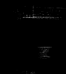
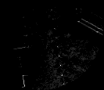
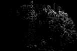
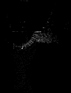
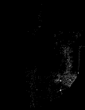
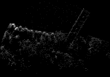
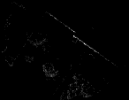
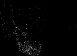
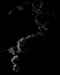
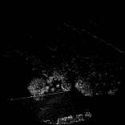

First, middle and last circles for four robots. Full-height inspection controls; online retrieval uses terrain-relative layers. These images were written during replay from the same immutable point payloads.

aerial05 / 0: 4,067 points frozen at creation

aerial05 / 13: 26,224 points frozen at creation

aerial05 / 26: 23,298 points frozen at creation

aerial07 / 0: 12,413 points frozen at creation

aerial07 / 12: 11,182 points frozen at creation

aerial07 / 23: 28,007 points frozen at creation

ground05 / 0: 5,608 points frozen at creation

ground05 / 22: 10,991 points frozen at creation

ground05 / 44: 15,979 points frozen at creation

ground06 / 0: 40,376 points frozen at creationground06 / 15: 6,897 points frozen at creation